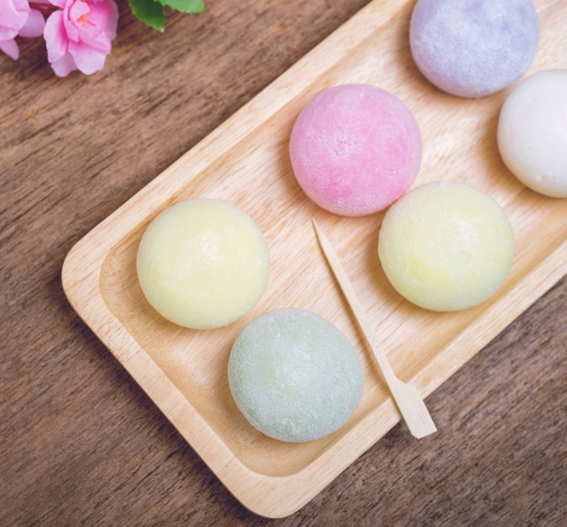

Mochi

Ingredientes
Para el mochi:
- Harina de arroz – 200 g
- Agua – 240 ml
- Azúcar 250 g
- Sal - una pizca
- Colorante alimentario – (azul, verde, rosa)
Relleno
- Judías blancas – 250 g
- Miel – 2 cucharadas
- Azúcar – 120 g
- Azúcar glass – 60 g
Cómo hacer helado de fresa:
- La receta original requiere ingredientes que no se encuentran fácil, como las judías anko o el polvo de té verde. Esta receta es una versión que se inspira en los mochi japoneses con ingredientes fáciles de encontrar en España. El relleno de los mochi requiere hacerlo un día antes ya que se prepara con judías que deben estar a remojo 12 horas. Introduce las judías escurridas en la olla rápida cubre con agua y tres cucharadas de azúcar. Programa 35 minutos. Una vez termine la cocción dejar reposar.
- Triturar las judías blancas, mezclar con el resto del azúcar y dejar reposar en la nevera al menos cinco horas. Al día siguiente hacemos la cobertura de este relleno.
- Tamizar la harina con ayuda de un colador. En un cazo calentar el agua y añadir poco a poco la harina sin dejar de remover. A continuación añadir el azúcar, cocinar durante 15 minutos sin dejar de remover hasta obtener una especie masa de textura densa.
- Apagar el fuego, retirar la masa y dejar reposar una hora, divide según colores la masa, (si quieres tres colores separamos tres partes de masa en tres recipientes o tapers distintos), añade colorante alimentario a cada parte de masa, deja reposar tapando con film de plástico.
- Recupera el relleno que hicimos al principio y tenemos en la nevera, recubre con la masa de colores que tenemos en los distintos tapers y espolvorea azúcar glass.